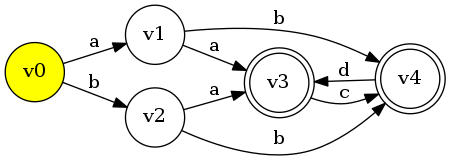

當然！ 字串是我們傳遞資訊的基本單位？
當然一定要好好弄清楚
剛剛的問題都圍繞在一個最基本的問題上：
匹配(Matching)
也就是我們會關心一個字串 \( B \)
有沒有出現在 \( A \) 上 ？
如 \( A = \str{abcd} \)， \( A[1, 3] = \str{bcd} , A[1, 2] = \str{bc} \)
可以知道用 \( B \) 匹配 \( A \) 其實就是在問 \( B \) 是不是 \( A \) 的子字串！
如 \( A = \str{abcd} \)， \( S(1) = A[1, 3] = \str{bcd}\) ，
簡單來說就是 \( A \) 尾巴的子字串！
一個簡單的廢話：
啊就一個一個位置慢慢試嘛…
for(int i = 0; i < lenA - lenB; i++) {
bool flag = true;
for(int j = 0; j < lenB && flag; j++) {
if(A[i+j] != B[j]) flag = false;
}
if( flag ) {
// Match !
}
}
在亂數的情形下 \( \ord{N} \) ！
當然，測資哪會給你那麼好過！
考慮 \( A = \texttt{"aaa} \cdots \texttt{aa"}, B = \texttt{"aaa} \cdots \texttt{ab"} \) ，
並且 \( A \) 的長度遠大於 \( B \)
\( B \) 從來沒有出現在 \( A \) 上，但你每個位置都要匹配到 \( B \) 的末端才知道！
總匹配數： \( \left( \abs{A} - \abs{B} \right) \abs{B} = \ord{ \abs{A} \abs{B} } \)
不夠好！
就像我們找東西會先分類一樣，何不先把字串分類？
Want : 一個函數 \( f : \texttt{string} \mapsto \{ 0, 1, \cdots, Q-1\} \)
要求：
有點像進位制。
好處： 可以滾動(Roll)！
記下所有 \( f(A[0, k]) \) ， 所有 \( f(A[i, j]) \) 都可立刻 ( \( \ord{1} \) )求出！
算出 \( f(A), f(B) \)
碰撞的機率是 \( 1/q \) → 最好 \(q\) 大一點！
咦？跟字串有什麼關係？
一個字串和其他 \( k \) 個字串撞的機率 $$ 1 - \left( 1 - \frac{1}{q} \right) ^ k $$
\( k \) 個字串中任一對相撞的機率 $$ 1 - \frac{ q(q-1) \cdots (q-k+1) }{q^k} $$
如果 \( q = 10^9, k = 10^5 \)
一個字串和其他 \( k \) 個字串撞的機率 $$ 1 - \left( 1 - \frac{1}{q} \right) ^ k \approx 10^{-4}$$
\( k \) 個字串中任一對相撞的機率 $$ 1 - \frac{ q^{ \underline{k} } }{q^k} \approx 99.3$$
Knuth–Morris–Pratt algorithm
應該是最廣為人知的線性單字串匹配演算法
在暴力法時我們每次匹配失敗時，往前一格，繼續匹配
但往前一格真的是必要的嗎？
其實有可能右移 \( 1, 2, \cdots, k-1 \) 都是不必要的，直接右移 \(k\) 就可以了。
Want: \( \fail(i) \) 要告訴我們，當我們匹配到 \( B[i] = A[j]\)，卻在 \( B[i+1] \) 的位置匹配失敗，應把 \( B[\fail(i)] \) 對齊 \(A[j]\) 繼續匹配。
仔細思考一陣，你會發現如果 \( \fail(i) = k \) ， 那 \( B[0, k] = B[i-k, i] \)
而且 \( \fail(i) \) 還要是滿足此性質的最大質，否則會漏掉一些可能性
利用 \( \fail(k) : k < i \) ， 我們可以求出 \( \fail(i) \) ！
不段嘗試 \( \fail(i), \fail^2(i), \fail^3(i), \cdots \)，看看 \( B[0, \fail(i)+1] \) 是否符合條件。
void build_fail_function(string B, int *fail) {
int len = B.length(), current_pos;
current_pos = fail[0] = -1; //Specially fail[0] = -1
for( int i = 1 ; i < len ; i ++ ) {
while( current_pos != -1
&& B[current_pos + 1] != B[i] ) {
current_pos = fail[current_pos];
}
if( B[ current_pos + 1 ] == B[i] ) current_pos ++;
fail[i] = current_pos;
}
}
void match(string A, string B, int *fail) {
int lenA = A.length(), lenB = B.length();
int current_pos = -1;
for( int i = 0 ; i < lenA ; i ++ ) {
while( current_pos != -1
&& B[current_pos + 1] != A[i] ) {
current_pos = fail[current_pos];
}
if( B[current_pos + 1] == A[i] ) current_pos ++;
if( current_pos == lenB - 1 ) {
// Match ! A[i - lenB + 1, i] = B
current_pos = fail[current_pos];
}
}
}
關鍵在 \( \texttt{while} \) 迴圈
每次 \( \texttt{current_pos} \) 只會加1，或是減去某個值。
均攤後 \( \ord{\abs{A} + \abs{B}} \)
光是名字聽起來就很潮
KMP
Z-value
利用已知的資訊！
假設我們已經求出 \( Z(i) = z \)，也就是 \( A[0, z-1] = A[i, i+z-1] \)， 問： \( Z(j) \; : \; j \in [i, i+z-1] \) 是否可快速求？
可！ 等於把這整塊搬到最前面！ 令 \( j' = j - i \)
關鍵的三種 Case ！
\( j' + Z(j') \) 沒有超過範圍或碰到邊界。
\( j' + Z(j') \) 超過範圍。
\( j' + Z(j') \) 碰到邊界。
L = R = 0;
for ( int i = 1 ; i < len ; i ++ ) {
if ( i > R ) Z[i] = 0; // Case 0
else {
int ip = i - L;
if ( ip + Z[ip] < Z[L] ) Z[i] = Z[ip]; // Case 1
else Z[i] = R - i + 1; // Case 2, 3
}
while ( i + Z[i] < len &&
A[ i + Z[i] ] == A[ Z[i] ] ) Z[i] ++;
if ( i + Z[i] - 1 > R ) {
L = i;
R = i + Z[i] - 1;
}
}
把兩個字串接起來， \( B \) 在前，\( A \) 在後，
中間用一個沒有出現過的字元連接。
如 \( A = \str{abaab}, B = \str{aab} \) ， 便令 \( S = \str{aab\$abaab} \) 。
→ 你會發現 \( B \) 是否能在 \( A \) 的某個位置被匹配，
只要看那個位置的 Z-value 是否等於 \( B \) 的長度
又稱作後綴數組。
非常強大的一個工具，匹配、計數…樣樣都行。
在看一次這句廢話：
從頭開始比對兩個字串： Easy
但不知道起始位置，只知道一個字串
出現在另一個字串中間： Not so easy
→ 乾脆把所有後綴都抓出來！
把所有的後綴全部抓出來排序。
好處：
Ex: \( S = \str{ABAABAAAB} \)
| \( \sa \) | |
| \( 5 \) | AAAB |
| \( 6 \) | AAB |
| \( 2 \) | AABAAAB |
| \( 7 \) | AB |
| \( 3 \) | ABAAAB |
| \( 0 \) | ABAABAAAB |
| \( 8 \) | B |
| \( 4 \) | BAAAB |
| \( 1 \) | BAABAAAB |
問題來了，怎麼排序？
真的直接抓出來硬排， \( \ord{N^2} \) 起跳 ， GG
有不少線性的做法 DC3, SAIS ， 但不好寫。
這裡只介紹最基本的倍增算法， \( \ord{N \log N} \) 。
現在有兩個字串 \( A \lt B \) ，把兩個對半切，變成 \( A_1 A_2, B_1 B_2 \)
只有兩種可能：
也就是 \( B \) 不可能會輸，頂多在第一階段平手。
Want: 對每個後綴，我先只比較前 \( 1 \) 個字元，用此得到的資訊求出只比前 \( 2 \) 個字元的大小關係， 再用此求出只比前 \( 4 \) 個字元的大小關係 …
前 \( 2k \) 個字元 = 某兩個後綴的前 \( k \) 個字元串接。
→ 等於每次要排序很多數對 \( (R_k(i), R_k(i+k) ) \)
如果一般排序法 → 每次 \( \ord{N \log N} \)
Radix sort → \( \ord{N} \)
\( A = \str{ABAAB} \)
| \(i\) | 0 | 1 | 2 | 3 | 4 |
| \(R_1(i)\) | 0 | 3 | 0 | 0 | 3 |
| \(i\) | 0 | 1 | 2 | 3 | 4 |
| (0, 1) | (1, 0) | (0, 0) | (0, 1) | (1, -1) | |
| \(R_2(i)\) | 1 | 4 | 0 | 1 | 3 |
| \(i\) | 0 | 1 | 2 | 3 | 4 |
| (1, 0) | (4, 1) | (0, 3) | (1, -1) | (3, -1) | |
| \(R_4(i)\) | 2 | 4 | 0 | 1 | 3 |
for (int i = 0; i < len; i++) ct[arr[i]+1]++;
for (int i = 1; i < val; i++) ct[i]+=ct[i-1];
for (int i = 0; i < len; i++) rk[i]=ct[arr[i]];
memset(ct, 0, sizeof(ct));
for(int i = 0; i < len; i++) ct[ip[i]+1]++;
for(int i = 1; i < alp; i++) ct[i]+=ct[i-1];
for(int i = 0; i < len; i++) rk[i]=ct[ip[i]];
for(int i = 1; i < len; i *= 2){
/* Blablabla */
}
for (int j = 0; j < len; j++){
if (j+i > len) tp[j][1] = 0;
else tp[j][1] = rk[j+i] + 1;
tp[j][0] = rk[j];
}
memset(ct, 0, sizeof(ct));
for(int j = 0; j < len; j++) ct[tp[j][1]+1]++;
for(int j = 1; j < len+2; j++) ct[j] += ct[j-1];
for(int j = 0; j < len; j++) tsa[ct[tp[j][1]]++] = j;
memset(ct, 0, sizeof(ct));
for(int j = 0; j < len; j++) ct[tp[j][0]+1]++;
for(int j = 1; j < len + 1; j++) ct[j] += ct[j-1];
for(int j = 0; j < len; j++)
sa[ct[tp[tsa[j]][0]]++] = tsa[j];
rk[sa[0]] = 0;
for(int j = 1; j < len; j++){
if( tp[sa[j]][0] == tp[sa[j-1]][0] &&
tp[sa[j]][1] == tp[sa[j-1]][1] )
rk[sa[j]] = rk[sa[j-1]];
else
rk[sa[j]] = j;
}
前面說過， Suffix Array 會把相像的後綴排在一起。
證明：看圖說故事！
這正是 Suffix Array 強大的地方！
證明：一樣看圖說故事！
for (int i=0, h=0; i < len; i++){
if (rk[i] == 0) h = 0;
else {
int j = sa[rk[i]-1];
h = max(0,h-1);
for( ; ip[i+h] == ip[j+h]; h++);
}
he[rk[i]] = h;
}
一個儲存多個字串的好方法
聽這個名字就很猛的樣子。
不過他不是自動 AC 機。
還記得 KMP 嗎？
KMP + Trie = AC 自動機！
KMP：
AC自動機：
KMP：
\( \fail(i) = \max k \) ， 其中 \( A[0, k] \) 要是 \( A[0, i] \) 的前綴。
AC自動機：
KMP： 匹配失敗，沿著 \( \fail(i), \fail^2(i) , \cdots \) 嘗試，直到 \( \fail^t(i) = -1 \)。
AC自動機： 匹配失敗，沿著 \( \flk(v), \flk^2(v) , \cdots \) 嘗試，直到 \( \flk^t(v) = v_0 \)，其中 \(v_0\) 表示根節點。
root->fail = NULL;
queue< Node* > que;
que.push_back(root);
while ( !que.empty() ) {
Node *fa = que.front(); que.pop_front();
for (auto it = fa->child.begin();
it != fa->child.end(); it++) {
Node *cur = it->second, *ptr = fa->fail;
while ( ptr && !ptr->child.count(it->first) )
ptr = ptr->fail;
cur->fail = ptr ? ptr->child[it->first] : root;
que.push(cur);
}
}
簡潔又強大的字串結構
簡單來說就是一張有向圖。
如果兩個自動機接受的字串集合一樣，那他們是等價的。
每個 \( B \) 的子狀態都當一個狀態。
\( \ord{N^2} \) ， 不佳。
勢必有等價的狀態。
給定兩個字串 \( B, T \) ，我們定義 \( T \) 在 \( B \) 上的結束集合 \( \edps_B(T) \) 為 \( \edps_B(T) = \{ i ~: B[ i - \abs{T} + 1 , i ] = T \} \)
所以他們可以看作是同一個 State ！
好像在哪裡看過…
所以 \( \alpha_i \) 包含的字串長度為 \( [ \mx(\flk(\alpha_i)) + 1, \mx(\alpha_i) ] \)
現在我們終於可以來講線性的構造法了。
想法是這樣的，我們從空字串開始，把字元一個一個加到後綴自動機裡。
假設原本的字串叫 \( B \) ， 加了一個字元 \( c \) 後變成 \( B' = Bc \)
我們必需了解 \(\edps_B, \edps_{B'} \) 怎麼變化。
答案： 幾乎不會變！
我們新增一個節點 \( \alpha_{k+1} \)
假設 \( \alpha_k = \alpha(B) \) ，表示原本 \( B \) 對應的 state。 沿著 \( \alpha_k , \flk(\alpha_k) , \flk(\flk(\alpha_k)) , \cdots \) 我們可以遍歷所有 \( B \) 的後綴！
令 \( u = \alpha_k \)
如果 \( u \) 沒有連出去字元為 \( c \) 的有向邊，
則加一條 \( (u\rightarrow v, c) \) 的邊，然後令 \( u \leftarrow \flk(u) \)
有3種case。
一直走，走到起始的根節點 \( \alpha_0 \) 都沒有 \( c \) 的邊。
表示這個字元第一次出現。
令 \( \flk(\alpha_{k+1}) = \alpha_0 \) ，收工！
\(u\) 有連出 \(c\) 的邊，假設 \( u \) 連到 \(v\)。
並且 \( \mx(v) = \mx(u) + 1 \) ，也就是 \( u \rightarrow v \) 是重邊。
v 裡的字串的 \( \edps \) 全部多加一個 \( n \)
\( \edps \) 還是一樣！ 不用分家。
令 \( \flk(\alpha_{k+1}) = v \) ，收工！
\(u\) 有連出 \(c\) 的邊，假設 \( u \) 連到 \(v\)。
並且 \( \mx(v) \gt \mx(u) + 1 \) ，也就是 \( u \rightarrow v \) 是輕邊。
v 裡的字串的 \( \edps \) 有些不加，有些全部多加一個 \( n \)
慘了，只好分家。
複製 \( v \) 一分得到 \( v' \)。
\( \flk(v') \leftarrow \flk(v) \)。
\( \flk(v), \flk(\alpha_{k+1}) \leftarrow v' \)。
所有 \( u \) 往 \( \flk(u) \) 走到的節點如果有邊指向 \( v \) 要改指到 \( v' \) 。因此我們不段令 \( u \leftarrow \flk(u) \) 去檢查，直到 \( u = \alpha_0 \) 或 \( u \) 沒有連到 \( v \) 的邊為止。
vector< State > vec;
int root, tail;
void extend(char c){
int u = tail;
vec.push_back( State(vec[u].minv + 1) );
// State(a) : New state with minv = a
np = vec.size() - 1; // np : new point
for ( ; u && vec[u].child[c] == 0 ;
u = vec[u].flk ) vec[u].child[c] = np;
/* Cases Here */
// ...
/* Cases End */
tail = np;
}
if (u == 0){ // Case #0
vec[np].flk = root;
} else {
if (vec[ vec[u].child[c] ].maxv == vec[u].maxv + 1){
vec[np].flk = vec[u].child[c]; // Case #1
} else {
int v = vec[u].child[c];
vec.PB(vec[v]);
int vp = vec.size() - 1;
vec[vp].maxv = vec[u].maxv + 1;
vec[v].flk = vec[np].flk = vp;
for ( ; u && vec[u].child[c] == v; u=vec[u].flk)
vec[u].child[c] = vp;
}
}
還記得點和邊的數量級是 \( \ord{N} \) 嗎？
除了 Case #2 的 \( \texttt{for} \) 以外，其他的操作都會加一點/加一邊。
Case #2 的話… 就相信他是線性的吧。
真的要說又是另一個故事了。